Coletânea de Poemas
Filetes
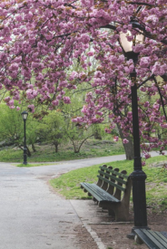
Acrobata da Dor
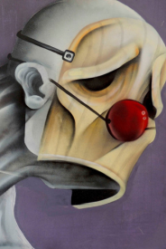
Dilacerações
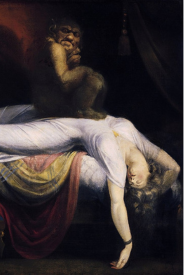
Alma Solitária
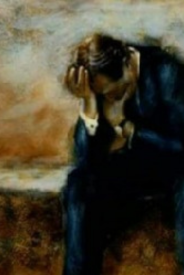
Braços

Múmia
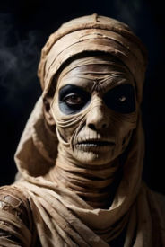
Sonho Branco
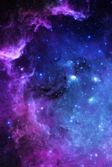
Canção da Formosura
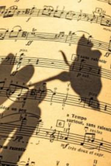
Lubricidade
Cristo de Bronze
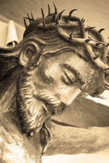
Satã
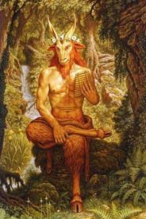
Monja
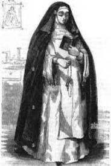
Noiva da Agonia

Encarnação
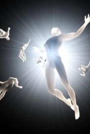
Cristais
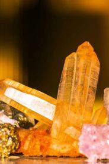
Sacred Hatred
trans. Flavia Vidal
Oh, my hatred, my majestic hatred,
my holy and pure and benevolent hatred,
annoint my forehead with your great kiss,
render me humble and render me lofty.
Humble, but generous to the humble:
lofty to those beings without Desire,
without Goodness, without Faith, without the gleam
of the fertilizing, affectionate sun.
Oh, my hatred, my blessed standard-banner
waving in the infinity of my soul,
beyond other sacred banners.
Sound, hatred: good hatred! Be my shield
against the villains of Love, who defame everything,
from the seven towers of the mortal Sins!
Cruz e Sousa - Brazilian Poetry - Brazil -
www.antoniomiranda.com.br.
Disponível em:
http://www.antoniomiranda.com.br/poesia_ingles/cruz_e_sousa.html.
Acesso em: 4 dez. 2023.
Referências Bibliográgicas
Mercado público à noite. Disponível em: https://br.pinterest.com/pin/361273201340370878/. Acesso em: 4 dez. 2023.
CARLOS, M. M. LIBRES DE LA MALDICIÓN Y EL PECADO. Disponível em: https://carlosmartinezm.blogspot.com/2012/07/libres-de-la-maldicion-y-el-pecado.html Acesso em: 4 dez. 2023.
GERMI_P. The suffering of Jesus Christ. Details of the bronze statue. Sepia. Disponível em: https://www.istockphoto.com/br/foto/est%C3%A1tua-de-jesus-cristo-gm921608796-253078718 . Acesso em: 4 dez. 2023.
Heinrich füssli (1741-1825) - Le cauchemar (1781). Disponível em: https://br.pinterest.com/pin/394627986100859152/?amp_client_id=CLIENT_ID%28_%29&mweb_unauth_id=%7B%7Bdefault.session%7D%7D&_url=https%3A%2F%2Fbr.pinterest.com%2Famp%2Fpin%2F394627986100859152%2F&_expand=true . Acesso em: 4 dez. 2023.
Placa Decorativa Foto Parque Florido. Disponível em: https://www.kiaga.com.br/placa-decorativa-foto-parque-florido/p/k516 . Acesso em: 4 dez. 2023.
Pin by Ali Hassan on I never promised you a rose garden. Disponível em: https://br.pinterest.com/pin/537054324320941040/ . Acesso em: 4 dez. 2023.
Wallpaper eastethic 2/5. Disponível em: https://br.pinterest.com/pin/892135007405011548/ . Acesso em: 4 dez. 2023.
Cruz e Sousa. Disponível em: https://br.pinterest.com/pin/607774912210950622/ . Acesso em: 4 dez. 2023.
ASSETS, H. 7K. Premium AI image. Disponível em: https://www.freepik.com/premium-ai-image/closeup-portrait-scary-mummy-dark-halloween-horror-film_82242338.htm . Acesso em: 4 dez. 2023.
A Song For You. Disponível em: https://asongforyou.net/musical-memoirs . Acesso em: 4 dec. 2023.
Disponível em: https://encrypted-tbn0.gstatic.com/images?q=tbn:ANd9GcT02O6EWL9XKMdG5gQa0ztVHWTXv4Bw2b-2CL05M491-JEOBJJr . Acesso em: 4 dez. 2023.
ALAMY LIMITED. La monja Cut Out Stock Images. Disponível em: https://www.alamy.com/stock-photo/la-monja.html?cutout=1&sortBy=relevant . Acesso em: 4 dez. 2023.
Disponível em: https://pt.quora.com/Por-que-o-Diabo-muitas-vezes-é-representado-como-um-bode-cabra . Acesso em: 4 dez. 2023.
SER, I.; COMPLETO, V. M. P. Cova Abismal De Poemas Sombrios. Disponível em: http://coabposo.blogspot.com/2018/02/noiva-da-agonia-cruz-e-sousa.html . Acesso em: 4 dez. 2023.
SANTOS, M. Qual é a finalidade da encarnação dos Espíritos? Disponível em: https://www.eusemfronteiras.com.br/qual-e-a-finalidade-da-encarnacao-dos-espiritos/ . Acesso em: 4 dez. 2023.
DINIZ, D. Qual é o poder dos cristais? Como usar sua energia para entrar em 2023 com o pé direito. Disponível em: https://www.fashionbubbles.com/astrologia/poder-dos-cristais/ . Acesso em: 4 dez. 2023.